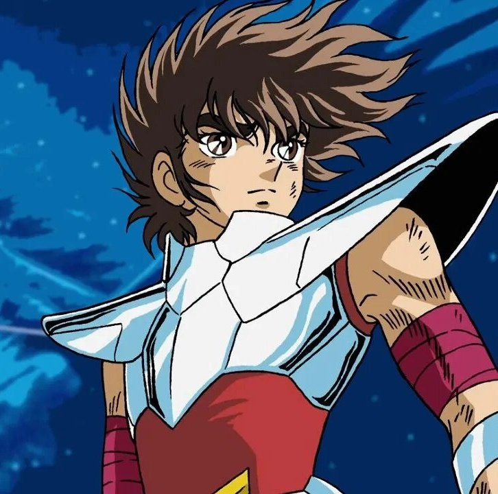
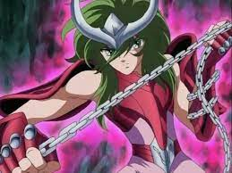
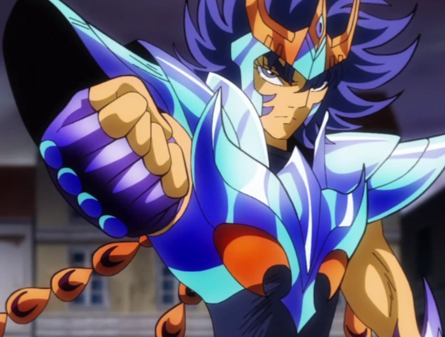

HISTÓRIA DOS CAVALEIROS
Saint Seiya (nome original da série) conta a história de um grupo de cinco jovens guerreiros cuja função era proteger Saori Kido, reencarnação de Atena, a deusa grega da sabedoria. Para lutar, eles utilizam a energia interior e do cosmos, e suas armaduras que são inspiradas em constelações e na mitologia grega. A animação é dividida em quatro sagas: Saga do Santuário; Saga de Asgard; Saga de Poseidon; Saga de Hades.
Curso Cavaleiros de Bronze

Habilidades de Pégaso
Seiya de Pégaso foi treinado para invocar seu poder de Cosmos e o usar para obter força e velocidade extraordinários em batalha. Embora o garoto comece sua viagem como Cavaleiro de Bronze, suas habilidades vão o tornar em um dos soldados mais poderosos de Atena.

Habilidades de Shiryu
Shiryu de Dragão é um Cavaleiro de Bronze do século XX, incumbido com a missão de proteger a deusa Atena. Teve seu treinamento realizado pelo Mestre Ancião nos Cinco Picos Antigos de Rozan, na China.

Habilidades de Ioga
Nas frias terras das Geleiras Eternas, no leste da Sibéria, Hyoga torna-se Cavaleiro tendo como mestre Camus, o Cavaleiro de Ouro de Aquário, que manipula o frio. Seguindo os ensinamentos do seu mestre, ele tenta manter-se racional diante de tudo, mas possui um lado emotivo que não consegue abandonar.

Habilidades de Shun
Embora subestimado por muita gente, a verdade é que Shun de Andrômeda é um dos personagens mais poderosos de Os Cavaleiros do Zodíaco. Infelizmente, os filmes da série, que sempre usavam da mesma fórmula dele precisar ser salvo pelo irmão, Ikki de Fênix, acabaram criando um desserviço ao fazê-lo parecer fraco.

Habilidades de Fenix
Ikki é morto pela Explosão Galáctica de Saga, enquanto no anime o Fênix sobrevive. Posteriormente ele ressurge na saga de Poseidon ajudando os cavaleiros de bronze na luta contra o Senhor dos mares resgatando Atena e destruindo seu reino submerso.